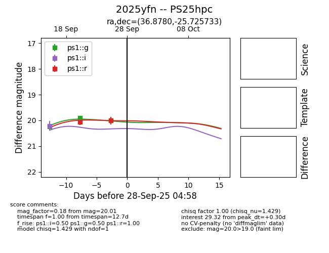
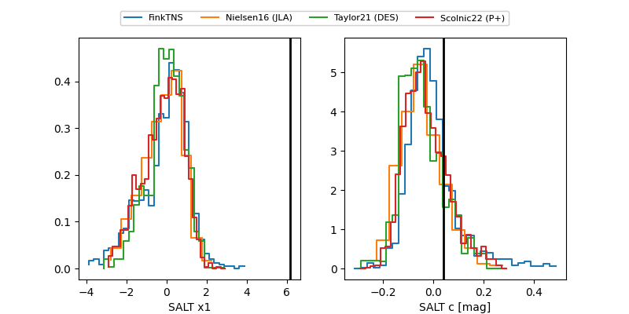

TNS: 2025yfn
YSE: 2025yfn
2025yfn (yse,tns)
PS25hpc (panstarrs)
equatorial (ra, dec) = (36.8780,-25.72573)
galactic (l, b) = (214.6646,-68.47819)


last ps1::g=20.01, ps1::i=20.21, ps1::r=20.00
3 ps1::g, 1 ps1::i, 2 ps1::r detections